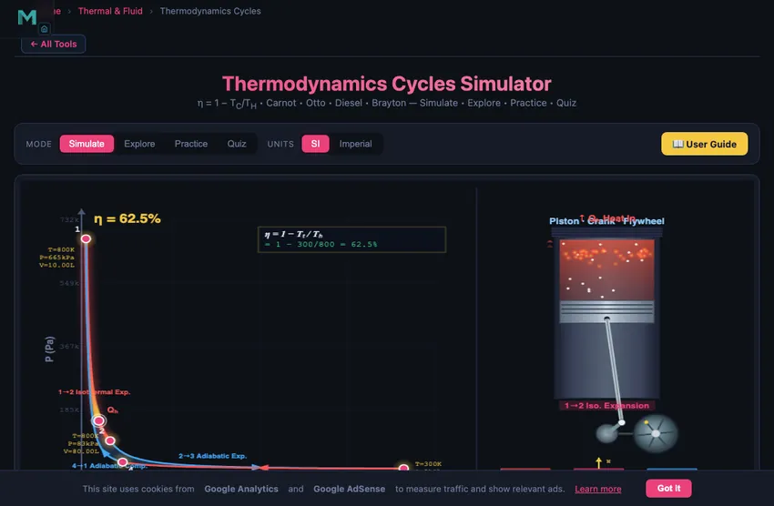

Thermodynamic Cycles Simulator
3D Model — Thermodynamic Cycles Simulator
Free thermodynamic cycles simulator — visualise Carnot, Otto, Diesel & Brayton cycles on PV diagrams with animated piston, stage-by-stage breakdown and efficiency formulas.
η = 1 − TC/TH • Carnot • Otto • Diesel • Brayton — Simulate • Explore • Practice • Quiz
Display Controls
Σ Live equations — values substituted from current state
⚙ State table — P, V, T at each cycle state
📈 T−s diagram — entropy versus temperature view
💡 What-if coach — insights from current values
1 Overview
The Thermodynamics Cycles Simulator lets you explore the four most important ideal thermodynamic cycles: the Carnot cycle, Otto cycle, Diesel cycle, and Brayton cycle. Each cycle is visualised on an interactive pressure-volume (PV) diagram with colour-coded process lines, state points, and a shaded area representing net work output. An animated piston on the right side of the canvas steps through the cycle processes, connecting the abstract PV diagram to physical motion.
This tool covers the first law and second law of thermodynamics, entropy, enthalpy, heat engine efficiency, and the Carnot limit. It is designed for mechanical engineering students studying power cycles, automotive engineers learning about internal combustion engines, aerospace students studying gas turbines, and instructors teaching thermodynamic cycles and energy conversion. Four modes provide simulation, concept exploration, practice, and quizzes.
2 Configuring the System
The simulator opens in Simulate mode with the Carnot cycle selected, Thot = 800 K, Tcold = 300 K, and a compression ratio of 8. The canvas shows the PV diagram on the left with two isotherms and two adiabats forming the cycle, and an animated piston on the right. Readout cards display efficiency η, net work Wnet, heat input Qin, heat rejected Qout, the active ratio (compression or pressure), temperatures, and reverse COP.
Each slider has a companion numeric input box for precise values — type a number and the slider snaps to it. Use the SI / Imperial unit toggle at the top to convert all temperature and energy readouts (K ↔ °F, kJ ↔ BTU). Switch Cycle Types (Carnot, Otto, Diesel, Brayton) using the pill tabs; each cycle reveals different PV shapes and different controlling parameters. Use the Presets (Ideal Carnot, Car Engine, Truck Engine, Jet Engine) to load realistic configurations quickly.
3 Simulate Mode & Controls
The PV diagram is the primary analysis tool. Colour-coded process lines distinguish isothermal (constant temperature), adiabatic (no heat transfer), isochoric (constant volume), and isobaric (constant pressure) processes. The enclosed area represents the net work per cycle — a larger area means more work output. Toggle Show Process Labels to see annotations on each process, Show Energy Flow to see arrows indicating heat in/out, Show State Values to display P/V/T at each numbered state point, and Show Eq. Overlay to draw the cycle's defining efficiency equation with live values on the canvas.
The animation bar gives you a play/pause button, reset, and a speed slider (0.1× to 3×) for the piston animation. Click Show Calculations at the canvas corner to open a step-by-step derivation modal showing how η, Wnet, Qin, and Qout are computed in SI units. Use Export CSV to download the four cycle state points (P, V, T) and Export PNG to save the canvas as an image. Right-click the canvas for a quick-action menu (copy efficiency, export, toggle labels, reset).
4 Learning Panels
Below the controls, four collapsible Learning panels deepen your understanding. The Live equations panel shows the active cycle's efficiency formula in classical KaTeX notation with current values substituted. The State table lists P, V, and T at each of the four state points (1, 2, 3, 4) in SI or Imperial. The T−s diagram plots the same cycle on temperature-entropy axes — useful for visualising heat transfer as the area under the curve. The What-if coach offers contextual hints based on current parameters (e.g. "increase r to raise η", "Carnot bound exceeded? — not possible by Second Law").
Use the Expand all / Collapse all buttons to manage screen space on mobile. The T−s diagram inside a collapsed card redraws automatically when you open it.
5 Explore, Practice & Quiz
Switch to Explore mode to browse 12 concept cards across Laws, Cycles, and Applications. Each card shows a description, key formula, mini-diagram, and worked example. Practice mode generates randomised thermodynamics problems (Carnot η, Otto η, Diesel η, work, heat rejected, COP, compression/pressure ratios, entropy change, Brayton η) with full solution steps shown after you submit. Quiz mode presents 5 mixed conceptual/numerical questions per session.
Keyboard shortcuts: press Enter to submit your answer in Practice or numeric Quiz questions. Use the Tab key to move between numeric inputs and sliders.
6 Engineering Notes
- The Carnot efficiency η = 1 − TC/TH sets the absolute maximum for any heat engine operating between the same temperatures. No real engine can exceed this limit — use it as a benchmark.
- On the PV diagram, the enclosed area equals the net work. A fatter cycle loop means more work per cycle.
- For the Otto cycle, efficiency depends only on the compression ratio r and the heat capacity ratio γ = 1.4 for air. Higher r means higher efficiency, but real engines are limited by knock (detonation).
- The Diesel cycle always has lower efficiency than the Otto cycle at the same compression ratio. However, Diesel engines use higher compression ratios (14–22 vs 8–12), making their actual efficiency competitive.
- Use the SI / Imperial unit toggle to compare textbook values across reference systems. All internal calculations stay in SI; the toggle is display-only.
- Watch the energy flow arrows to visualise where heat enters and leaves the cycle. The second law requires that Qout > 0 for any real cycle.
- Use this simulator alongside the Refrigeration Cycle Simulator to see the same principles in reverse.
Understanding Thermodynamic Cycles — Free Interactive PV Diagram Simulator

A thermodynamic cycle is a sequence of processes that returns a working fluid to its initial state, producing net work (engines) or moving heat against a temperature gradient (refrigerators). The four most-taught ideal cycles — Carnot, Otto, Diesel, and Brayton — are visualised here on interactive PV diagrams where the enclosed area equals the net work per cycle.
Comparing the Four Cycles at a Glance
| Cycle | Heat addition | Heat rejection | Efficiency formula | Typical use |
|---|---|---|---|---|
| Carnot | Isothermal at TH | Isothermal at TC | η = 1 − TC/TH | Ideal upper bound |
| Otto | Constant V | Constant V | η = 1 − 1/rγ−1 | Petrol engines |
| Diesel | Constant P | Constant V | η = 1 − (rcγ−1)/(γ(rc−1)rγ−1) | Diesel engines |
| Brayton | Constant P | Constant P | η = 1 − 1/rp(γ−1)/γ | Gas turbines, jets |
Carnot, Otto, Diesel & Brayton — The Four Key Cycles
The Carnot cycle consists of two isothermal and two adiabatic processes and sets the maximum possible efficiency for any heat engine: η = 1 − TC/TH. The Otto cycle models spark-ignition (petrol) engines with two adiabatic and two constant-volume processes; its efficiency depends on the compression ratio: η = 1 − 1/rγ−1. The Diesel cycle replaces constant-volume heat addition with constant-pressure heat addition, modelling compression-ignition engines. The Brayton cycle uses two adiabatic and two constant-pressure processes and is the ideal cycle for gas turbines and jet engines, with efficiency determined by the pressure ratio.
How to Use This Simulator
In Simulate mode, select a cycle type and adjust the hot and cold temperatures, compression ratio, pressure ratio, or cutoff ratio. The left side of the canvas draws a physically accurate PV diagram with colour-coded process lines, state points, and shaded work area. The right side shows an animated piston with controllable speed. Toggle process labels, energy flow arrows, state values, and the equation overlay for deeper understanding. Open Show Calculations for a step-by-step derivation in classical math notation. Switch to Explore to study 12 thermodynamics concepts, Practice to generate problems, and Quiz for a 5-question assessment.
Key Formulas & Efficiency Calculations
Thermal efficiency measures how effectively a cycle converts heat into work: η = Wnet / Qin. For a Carnot engine, this is purely a function of the temperature ratio. For Otto and Diesel cycles, the compression ratio r = V1/V2 is the key parameter. The coefficient of performance (COP) measures the effectiveness of refrigeration cycles. All calculations use γ = 1.4 for air (ideal diatomic gas).
The Carnot Limit — The One Equation Every Thermodynamics Student Needs
Carnot’s 1824 result is the deepest statement in classical thermodynamics: no heat engine working between two reservoirs at TH and TC can be more efficient than ηCarnot = 1 − TC/TH. Both temperatures must be absolute (Kelvin). It does not matter what the engine is made of, what working fluid it uses, or how clever the cycle is. The numbers fall straight out of the second law.
Take the simulator’s default Carnot preset: TH = 800 K (~527 °C, near the upper limit of a steam plant), TC = 300 K (about 27 °C, river-water temperature). The Carnot ceiling is 1 − 300/800 = 62.5 %. Real coal plants achieve about 38%, gas turbines about 42%, and combined-cycle plants up to 60% — getting close to the Carnot limit through smart cycling, but never exceeding it.
Otto vs Diesel vs Brayton — Same Three Strokes, Different Heat-Add Step
The petrol Otto cycle, the Diesel cycle and the gas-turbine Brayton cycle look similar on a PV diagram. The compression and expansion segments are nearly identical — reversible adiabatic curves. The difference is entirely in how heat is added:
| Cycle | Heat addition | Compression ratio | Cold-air efficiency | Where it lives |
|---|---|---|---|---|
| Otto | Constant volume (spark) | 9 – 12 | ~60 % at r=10 | Petrol engines |
| Diesel | Constant pressure (injection) | 14 – 22 | ~65 % at r=20 | Diesel engines |
| Brayton | Constant pressure (combustor) | 15 – 35 (as pressure ratio) | ~55 % at rp=15 | Gas turbines, jet engines |
| Carnot | Isothermal at TH | n/a | 1 − TC/TH | Theoretical limit only |
The simulator runs all four cycles with the same axes, so you can flip between them and watch the PV loop change shape. The area enclosed by the loop is the net work per cycle — visible at a glance.
Where Real Engines Lose Compared to Theory
Cold-air-standard analysis gives over-optimistic efficiencies. Real engines lose to four leakages the textbook model ignores:
- Finite combustion time. The spark fires at top dead centre but combustion takes 2–3 ms; the piston is already moving down. The heat addition is not strictly constant-volume.
- Heat loss to cylinder walls. Real cylinders are not adiabatic. Engine oil cooling extracts a few percent of the combustion energy as “wasted” heat.
- Friction and pumping losses. Piston rings, bearings, intake and exhaust throttling. Net brake efficiency is typically 60–70 % of the indicated efficiency.
- Exhaust enthalpy. Hot exhaust gas carries away energy that cold-air-standard analysis assumes is recovered. Bottom-cycle steam plants in CCGT recover some of this, which is why CCGT efficiencies are so high.
Standards and References for Cycle Analysis
- Cengel, Y. A. & Boles, M. A. — Thermodynamics: An Engineering Approach, 9th ed., Chapters 9 (Gas Power Cycles) and 10 (Vapor Power Cycles).
- Moran, M. J. — Fundamentals of Engineering Thermodynamics, 9th ed., for property tables and worked examples.
- Carnot, S. (1824) — Réflexions sur la puissance motrice du feu. The foundational paper. Worth reading in translation at least once.
- SAE J1995 — the engine power test code used to standardise efficiency claims.
Explore Related Simulators
If you found this Thermodynamics simulator helpful, explore our Ideal Gas Law simulator, Heat Transfer simulator, Refrigeration Cycle simulator, the Rankine Cycle simulator for steam power plants, and Fluid Flow simulator for more hands-on practice.